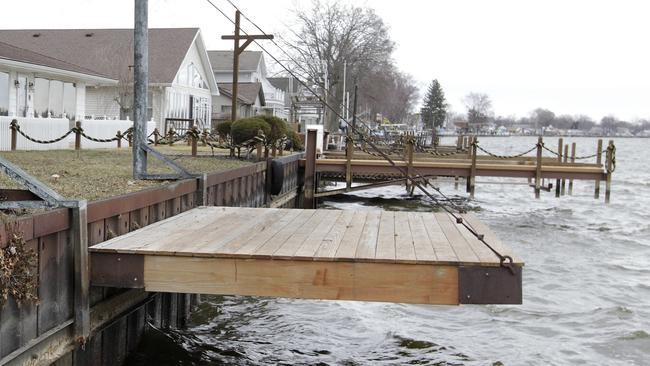

Old Docks
Ever since the infamous sinking of the
Little Baroness, the Toluca Lake Docks have gradually lost the interest of the townspeople. A replacement tour boat was never acquired and fish disappeared altogether within weeks of the accident. Nevertheless, recent efforts by the Historical Society has resulted in the docks being restored to tip-top shape. Give them a visit!